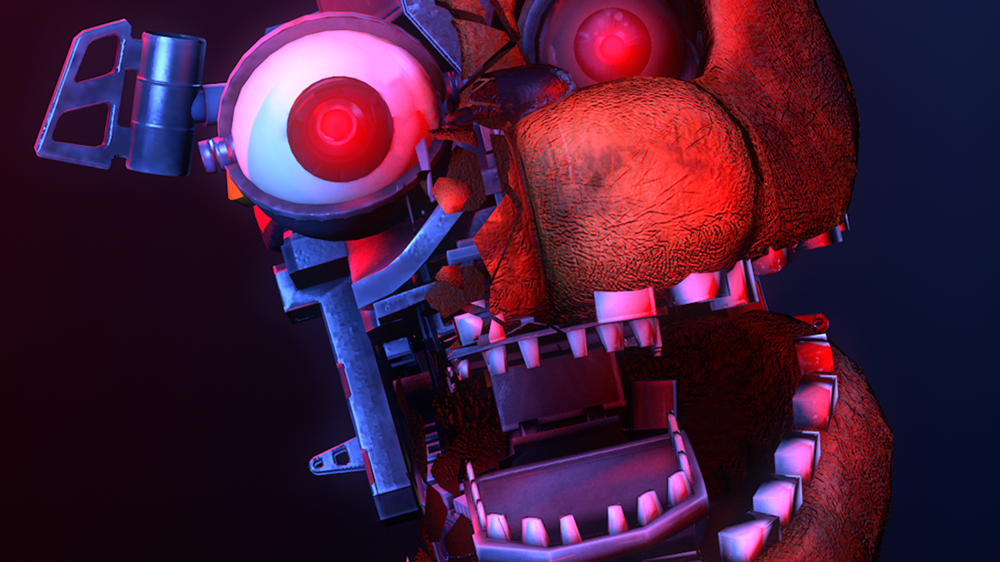
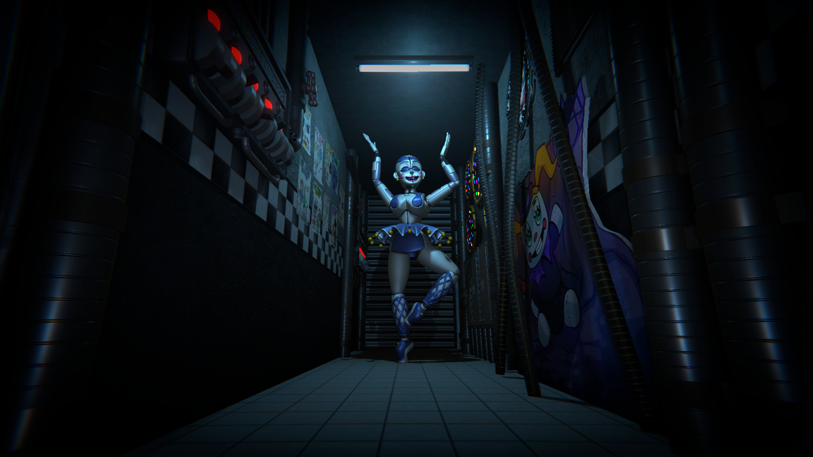
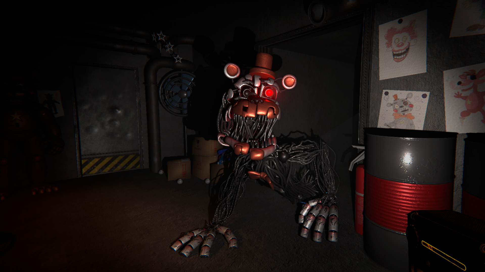
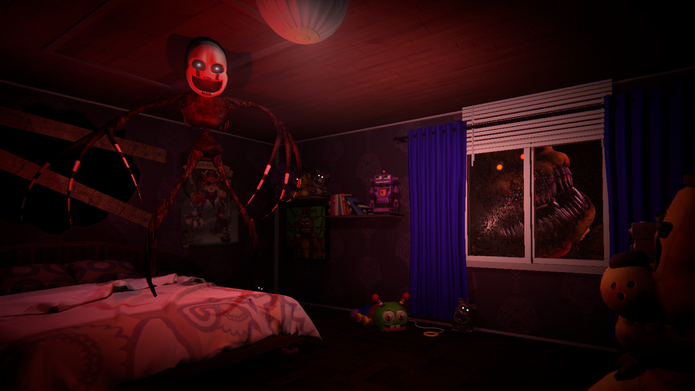
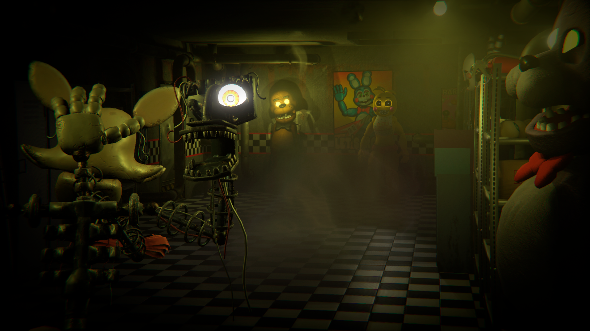
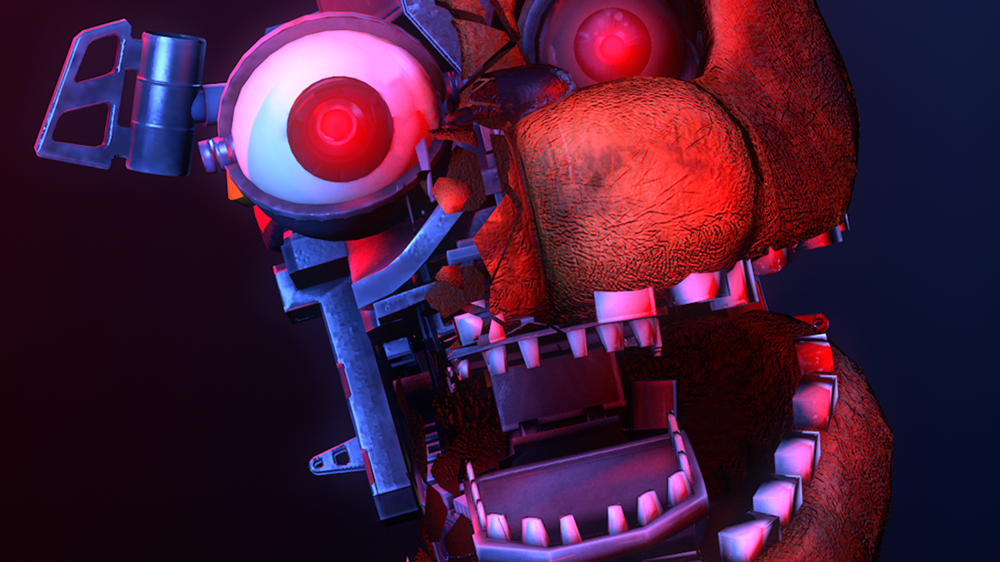
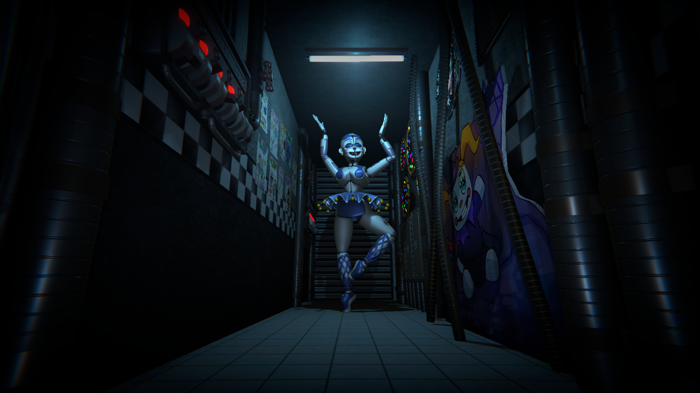
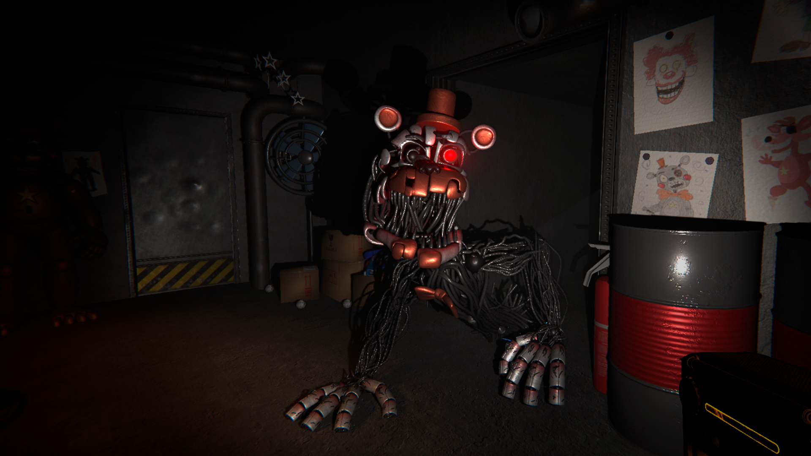
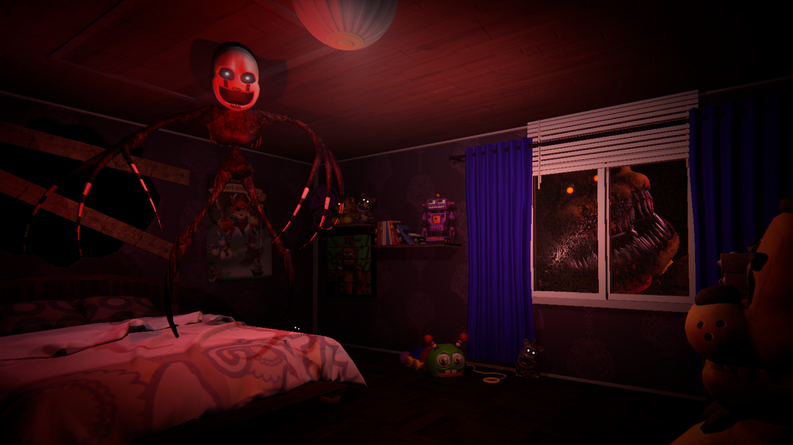
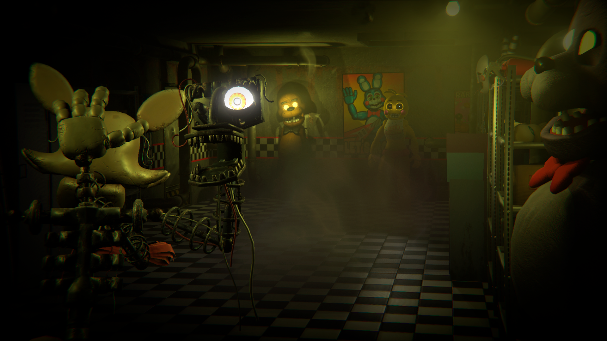

Acerca del proyecto
Les presentamos Tales of Puss and Beats, en este juego seras un ejercito de gatitos musicos en la busqueda de sus partituras que les fueron arrebatadas por los demas animales, teniendo asi que enfrentarte a perros, hurones, tortugas y pinguinos
En este proyecto hemos mezclado dos generos distintos de videojuegos siendo estos Tower Defense y ritmo. Deberas elegir a tus gatos sabiamente antes de la batalla y segun tu eleccion sera mas o menos sencilla la batalla que se realiza mediante el pulsamiento de teclas al ritmo de la musica
Preguntas frecuentes
¿Cómo puedo hacer una donación?
Puedes hacer una donación a través de nuestro sitio web, haciendo clic en el botón "Donar" en la página de inicio. También aceptamos donaciones por correo o en persona en nuestras oficinas.
¿Cómo puedo saber más sobre su organización?
Puedes encontrar información detallada sobre nuestra organización en nuestro sitio web. También puedes contactarnos por correo electrónico o teléfono si tienes alguna pregunta específica.
¿Cómo puedo convertirme en voluntario?
Si estás interesado en convertirte en voluntario, por favor, visita nuestra página de "Voluntariado" en nuestro sitio web para ver las oportunidades disponibles. También puedes comunicarte con nosotros directamente para obtener más información.
¿Cómo puedo ponerme en contacto con ustedes?
Puedes ponerte en contacto con nosotros por correo electrónico, teléfono o visitando nuestras oficinas en persona. Puedes encontrar nuestra información de contacto en la página de "Contacto" en nuestro sitio web.
 








